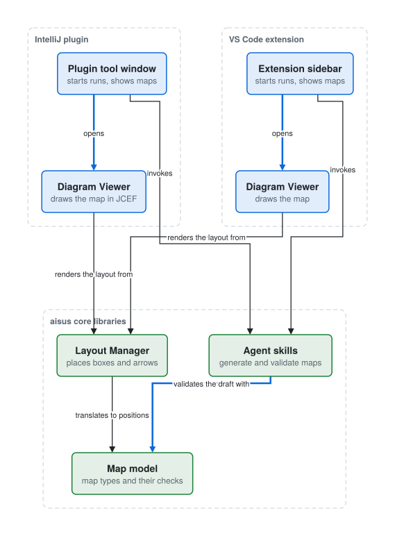

5 Application design
aisus keeps its core libraries apart from the platforms that show a map. The core libraries are the map model, the layout manager and the agent skills. Each platform adds only a thin layer on top of them, made of a panel that starts runs and a diagram viewer that draws the result. Figure 5 shows this split for the VS Code extension and the IntelliJ plugin.
The split lets aisus reach a new platform quickly. The IntelliJ plugin hosts the same diagram viewer as the VS Code extension, inside the IDE's built-in browser, and both rely on the same core libraries. A new platform needs its own panel and a place for the viewer, and the core logic stays as it is.
The split also keeps the agent skills independent of how a map is drawn. A skill has one job, which is to produce a JSON document in the map format described in section 5.1. The map model checks that document before it is published. Any viewer that reads the map format can then draw it, on whichever platform it runs.

5.1 Data model
The map format treats a diagram as a set of claims about the code. A box claims that a part of the system exists, an arrow claims that one part relies on another, and a group claims that some parts belong together. A map is only as useful as these claims are true. The format therefore ties every box to evidence, as Figure 5.1 shows from left to right.
That evidence is the citation. A box must point to the lines of code that make it real, and a box that points to nothing is refused. A reader never has to take the diagram on trust. They can open any box and read the code it stands for, which turns the map from a picture into an index of the codebase.

5.2 Key flows
Two workflows carry most of what aisus does. The first, in Figure 5.2.1, turns a request into a map. A developer asks for a map, and a coding agent studies the repository and drafts one. aisus does not take the draft on trust. It checks the draft against the map format and against the code it cites, and hands it back with every problem it finds until the draft passes. These checks are plain code rather than a model's judgement. Hence, a map that passes is certain to render, and every box in it points to code that exists. Only such a map is kept and shown to the developer.
The second workflow, in Figure 5.2.2, shows what has changed. The developer picks an earlier map of the same code, and aisus compares the two. It works out which parts of the system appeared, changed or disappeared in between, and marks them on the map on screen. The comparison is also plain code without agent involvement. A reviewer sees how a change moves the architecture, rather than piecing it together from the files it touched. Together the two workflows let a team draw a map once and then follow how its architecture moves over time.


5.3 Deployment
Figure 5.3 shows where each part of aisus runs. Nearly all of it runs on the developer's own computer. The extension, the coding agent and the maps sit beside the code, and drawing or comparing a map needs no aisus server. A developer who never shares a map can use aisus without an aisus account.
Only two paths lead to aisus cloud, and a person chooses each one. A developer can share a map with the team, and a team can let the pull request check send its results. What travels is the map and its findings. The code stays in the repository, and the check comments on the pull request whether or not anything is sent.
The cloud itself is one small server. It hosts the website where a team reads shared maps, and it keeps those maps in its database. GitHub tells it who someone is and which repositories they may see, and Stripe takes the payments. aisus therefore holds no passwords and no card details. Running a single server keeps the cost of the service low.